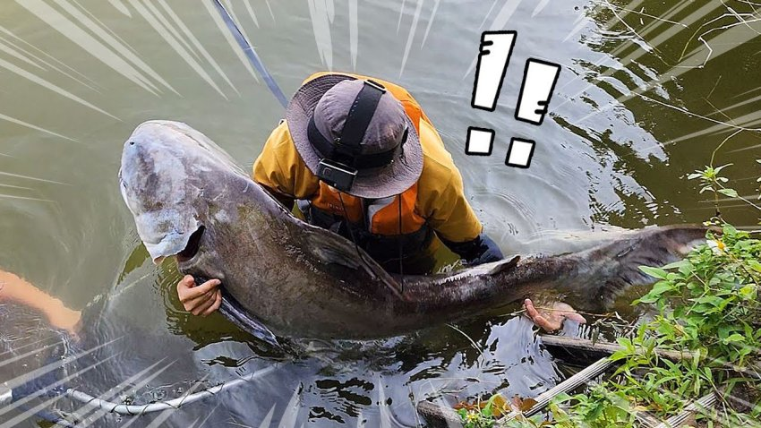
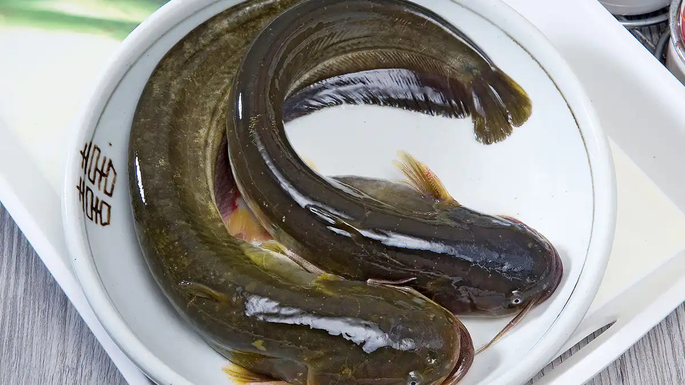
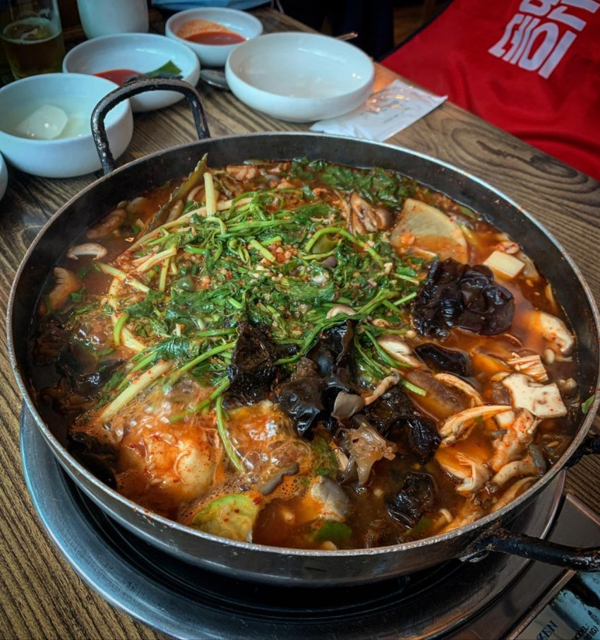
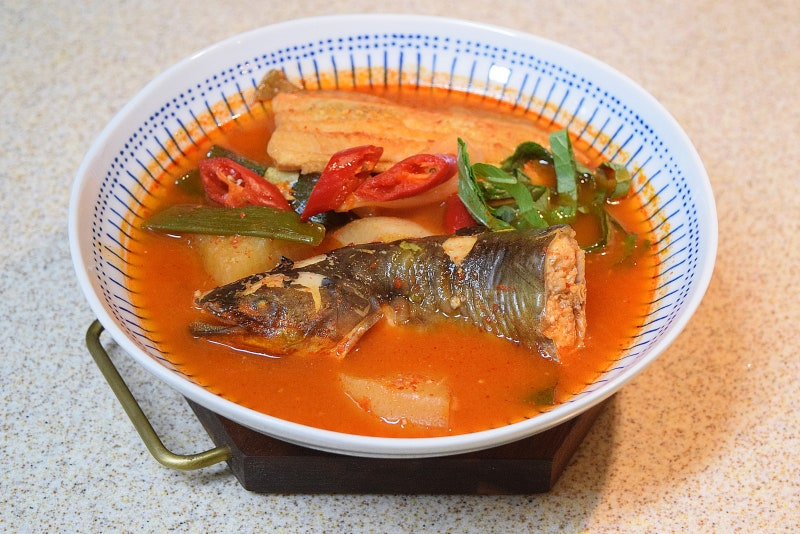
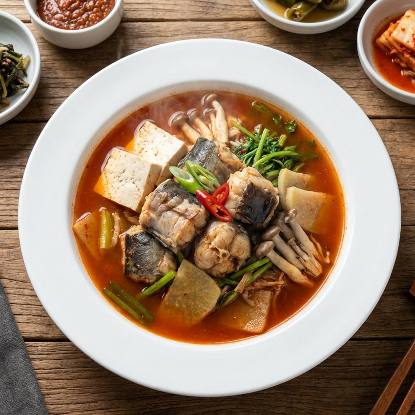
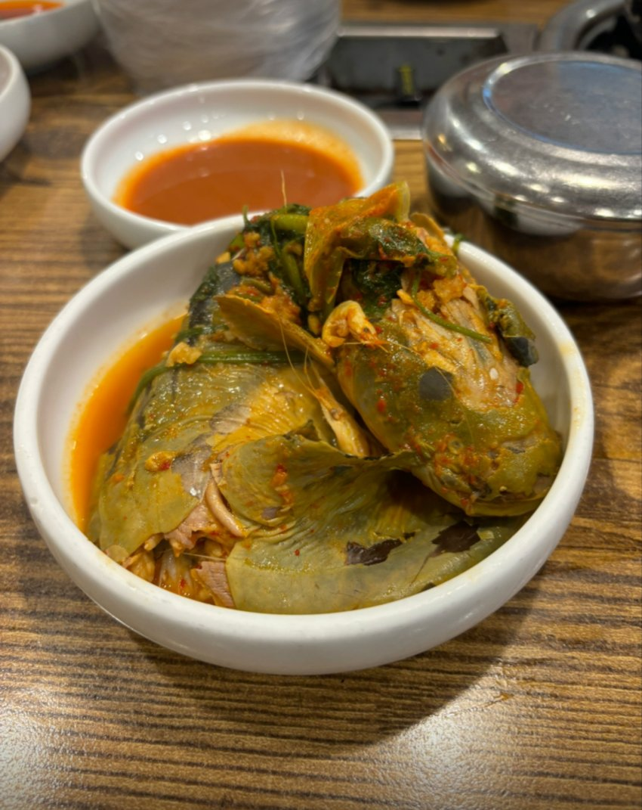

그건바로 '메기매운탕'
이건 "니가 잘하는집을 안가봐서 그래" 가 적용안되는 음식임
잘하는집 가서 먹어봤는데도 민물고기 특유의 흙냄새 못없앰






그건바로 '메기매운탕'
이건 "니가 잘하는집을 안가봐서 그래" 가 적용안되는 음식임
잘하는집 가서 먹어봤는데도 민물고기 특유의 흙냄새 못없앰
댓글
수집 당시 댓글 382개
ㅇㅇ · 11.22 12:50:44
o · 11.22 12:52:00
ㅇㅇ · 11.22 12:53:58
· ㅇㅇ · 11.22 18:40:43
ㅇㅇ · 11.22 12:56:48
ㅇㅇ · 11.22 13:00:13
ㅇㅇ · 11.22 13:00:46
중국국격
엄청나다
Lazulite · 11.22 13:02:23
ㅇㅇ · 11.22 13:03:00
ㅇㅇ · 11.22 13:03:47
ㅇㅇ · 11.22 13:15:12
ㅇㅇ · 11.22 13:15:16
ㅇㅇ · 11.22 13:23:11
ㅇㅇ · 11.22 13:23:17
ㅇㅇ · 11.22 13:23:29
인천왕자 · 11.22 13:24:50
· 인천왕자 · 11.22 13:24:57
ㅇㅇ · 11.22 13:26:13
ㅇㅇ · 11.22 13:26:59
ㅇㅇ · 11.22 13:29:21
· ㅇㅇ · 11.22 13:29:26
ㅇㅇ · 11.22 13:35:53
· ㅇㅇ · 11.22 14:06:24
· ㅇㅇ · 11.22 19:01:49
부드러운곰탱이 · 11.22 13:40:00
ㅇㅇ · 11.22 13:46:50
ㅇㅇ · 11.22 13:54:21
ㅇㅇ · 11.22 13:59:46
ㅇㅇ · 11.22 14:06:25
ㅇㅇ · 11.22 14:07:00
멋진남자 · 11.22 14:17:27
ㅇㅇ · 11.22 14:22:42
ㅇㅇ · 11.22 14:24:11
ㅇㅇ · 11.22 14:27:36
ㅇㅇ · 11.22 14:28:00
더블알발음은아르르 · 11.22 14:29:49
ㅇㅇ · 11.22 14:30:29
ㅇㅇ · 11.22 14:31:59
ㅇㅇ · 11.22 14:33:52
· ㅇㅇ · 11.22 15:37:56
ㅇㅇ · 11.22 14:40:46
ㅇㅇ · 11.22 14:43:54
ㅇㅇ · 11.22 14:45:43
· ㅇㅇ · 11.22 15:37:28
ㅇㅇ · 11.22 14:49:02
ㅇㅇ · 11.22 14:50:37
ㅇㅇ · 11.22 14:51:40
ㅇㅇ · 11.22 14:56:16
ㅇㅇ · 11.22 15:08:59
ㅇㅇ · 11.22 15:14:39
ㅇㅇ · 11.22 15:14:59
ㅇㅇ · 11.22 15:22:00
ㅇㅇ · 11.22 15:24:25
ㅇㅇ · 11.22 15:27:34
ㅇㅇ · 11.22 15:30:34
ㅇㅇ · 11.22 15:31:08
ㅇㅇ · 11.22 15:32:38
ㅇㅇ · 11.22 15:37:07
ㅇㅇ · 11.22 15:40:07
ㅇㅇ · 11.22 15:42:36
ㅇㅇ · 11.22 15:47:35
ㅇㅇ · 11.22 16:03:55
ㅇㅇ · 11.22 16:06:31
ㅇㅇ · 11.22 16:06:52
너는ㅄ이맞습니다 · 11.22 16:19:23
ㅇㅇ · 11.22 16:28:17
ㅇㅇ · 11.22 16:30:46
ㅇㅇ · 11.22 16:34:42
Dd · 11.22 16:40:24
ㅇㅇ · 11.22 16:48:44
ㅇㅇ · 11.22 16:50:45
ㅇㅇ · 11.22 16:52:35
ㅇㅇ · 11.22 16:56:36
ㅇㅇ · 11.22 17:14:32
· ㅇㅇ · 11.22 17:15:16
ㅇㅇ · 11.22 17:15:13
ㅇㅇ · 11.22 17:19:41
오무오무 · 11.22 17:50:27
ㅇㅇ · 11.22 17:52:00
ㅇㅇ · 11.22 18:01:37
· ㅇㅇ · 11.22 18:49:11
ㅇㅇ · 11.22 18:05:35
niik · 11.22 18:07:38
ㅇㅇ · 11.22 18:09:21
· ㅇㅇ · 11.22 18:14:20
· ㅇㅇ · 11.22 18:16:12
ㅇㅇ · 11.22 18:21:10
ㅇㅇ · 11.22 18:33:07
ㅇㅇ · 11.22 18:50:05
· ㅇㅇ · 11.22 19:34:29
ㅇㅇ · 11.22 18:58:46
glow · 11.22 18:59:56
ㅇㅇ · 11.22 19:10:11
ㅇㅇ · 11.22 19:11:48
ㅇㅇ · 11.22 19:16:42
ㅇㅇ · 11.22 19:22:23
베이린 · 11.22 19:28:30
양산히드라 · 11.22 19:32:58
ㅇㅇ · 11.22 19:34:13
ㅇㅇ · 11.22 19:39:22
ㅇㅇ · 11.22 11:25:13
ㅇㅇ · 11.22 11:25:19
ㅇㅇ · 11.22 11:25:48
ㄱㄴㄷ · 11.22 11:26:15
ㅇㅇ · 11.22 11:28:19
ㅇㅇ · 11.22 11:31:00
ㅇㅇ · 11.22 11:31:25
· 갓새우초밥 · 11.22 14:28:43
ㅇㅇ · 11.22 11:33:55
· ㅇㅇ · 11.22 11:34:02
ㅇㅇ · 11.22 11:34:39
ㅇㅇ · 11.22 11:35:29
ㅇㅇ · 11.22 11:39:30
ㅇㅇ · 11.22 11:42:37
Rumble · 11.22 11:43:42
· Rumble · 11.22 11:43:58
ㅇㅇ · 11.22 11:43:51
해갤러 · 11.22 11:44:08
· ㅇㅇ · 11.22 13:24:44
ㅇㅇ · 11.22 11:48:45
ㅇㅇ · 11.22 11:49:14
ㅇㅇ · 11.22 11:50:55
ㅇㅇ · 11.22 11:50:55
ㅇㅇ · 11.22 11:53:55
· ㅇㅇ · 11.22 11:55:12
· ㅇㅇ · 11.22 11:56:51
· ㅇㅇ · 11.22 12:01:06
· ㅇㅇ · 11.22 12:32:30
· ㅇㅇ · 11.22 12:33:15
· ㅁㄴㅇ · 11.22 12:56:59
· ㅁㄴㅇ · 11.22 12:58:49
· ㅇㅇ · 11.22 13:33:31
· ㅇㅇ · 11.22 14:36:50
· ㅇㅇ · 11.22 15:13:16
· ㅁㄴㅇ · 11.22 15:17:42
· 14프맥 · 11.22 15:18:51
· ㅇㅇ · 11.22 15:25:17
· ㅁㄴㅇ · 11.22 15:25:19
· 14프맥 · 11.22 15:28:30
· 14프맥 · 11.22 15:31:25
· ㅇㅇ · 11.22 15:32:00
· 14프맥 · 11.22 15:34:08
· ㅁㄴㅇ · 11.22 15:38:12
· 14프맥 · 11.22 15:39:13
· ㅁㄴㅇ · 11.22 15:39:50
· 14프맥 · 11.22 15:40:19
· ㅁㄴㅇ · 11.22 15:40:42
· 14프맥 · 11.22 15:41:15
· ㅁㄴㅇ · 11.22 15:41:40
· 14프맥 · 11.22 15:42:43
· 14프맥 · 11.22 15:43:20
· ㅁㄴㅇ · 11.22 15:44:19
· ㅁㄴㅇ · 11.22 15:45:24
· 14프맥 · 11.22 15:46:14
· ㅁㄴㅇ · 11.22 15:47:29
· 14프맥 · 11.22 15:48:34
· 14프맥 · 11.22 15:49:02
· ㅁㄴㅇ · 11.22 15:50:40
ㅇㅇ · 11.22 11:55:12
ㅇㅇ · 11.22 11:56:05
ㅇㅇ · 11.22 11:57:17
ㅇㅇ · 11.22 11:58:05
· ㅇㅇ · 11.22 12:02:23
남정네 · 11.22 11:59:45
ㅇㅇ · 11.22 12:00:03
DC전사쿠루미쨩 · 11.22 12:01:41
ㅇㅇ · 11.22 12:01:44
ㅇㅇ · 11.22 12:03:13
ㅇㅇ · 11.22 12:06:09
히이잉 · 11.22 12:09:09
ㅇㅇ · 11.22 12:10:05
ㅇㅇ · 11.22 12:11:18
ㅇㅇ · 11.22 12:11:57
ㅇㅇ · 11.22 12:12:09
ㅇㅇㅇ · 11.22 12:15:20
つついあやめのおっと · 11.22 12:16:17
ㅇㅇ · 11.22 12:18:27
ㅇㅇ · 11.22 12:20:20
글글글글글 · 11.22 12:23:07
ㅇㅇ · 11.22 12:23:22
ㅇㅇ · 11.22 12:26:38
dd · 11.22 12:26:53
· dd · 11.22 12:28:42
· ㅇㅇ · 11.22 13:55:27
ㅇㅇ · 11.22 12:28:56
ㅇㅇ · 11.22 12:29:40
ㅇㅇ · 11.22 12:30:20
· ㅇㅇ · 11.22 16:59:40
ㅇㅇ · 11.22 12:30:24
ㅇㅇ · 11.22 12:32:15
ㅇㅇ · 11.22 12:37:48
ㅇㅇ · 11.22 12:41:14
· ㅇㅇ · 11.22 13:27:40
· ㅇㅇ · 11.22 18:40:12
ㅇㅇ · 11.22 12:42:24
· ㅇㅇ · 11.22 12:44:44
· ㅇㅇ · 11.22 13:03:47
· 더블알발음은아르르 · 11.22 14:30:25
ㅇㅇ · 11.22 12:45:02
ㅇㅇ · 11.22 12:48:16
· ㅇㅇ · 11.22 11:38:36
ㅇㅇ · 11.22 10:44:50
ㅇㅇ · 11.22 10:45:09
· ㅇㅇ · 11.22 10:45:27
· ㅇㅇ · 11.22 10:47:52
· ㅇㅇ · 11.22 10:52:28
· 하라라락랅 · 11.22 11:39:32
ㅇㅇ · 11.22 10:45:13
ㅇㅇ · 11.22 10:45:27
ㅇㅇ · 11.22 10:45:34
· ㅇㅇ · 11.22 10:51:26
· 케떡 · 11.22 11:54:03
ㅇㅇ · 11.22 10:45:53
· ㅇㅇ · 11.22 10:46:37
ㅇㅇㅇ · 11.22 10:46:24
· ㅇㅇ · 11.22 10:47:54
· ㅇㅇ · 11.22 11:39:13
· ㅇㅇㅇ · 11.22 11:41:41
· ㅇㅇ · 11.22 11:43:10
ㅇㅇ · 11.22 10:47:25
· ㅇㅇ · 11.22 10:48:51
· ㅇㅇ · 11.22 10:51:06
ㅇㅇ · 11.22 10:48:05
ㅇㅇ · 11.22 10:49:11
· ㅇㅇ · 11.22 10:49:31
· ㅇㅇ · 11.22 10:50:17
ㅇㅇ · 11.22 10:49:19
ㅇㅇ · 11.22 10:50:07
· ㅇㅇ · 11.22 10:51:40
· 버솟 · 11.22 10:52:11
· ㅇㅇ · 11.22 11:39:25
· ㅇㅇ · 11.22 12:03:09
ㅇㅇ · 11.22 10:50:11
버솟 · 11.22 10:50:11
· 버솟 · 11.22 10:51:31
ㅇㅇ · 11.22 10:50:35
ㅇㅇ · 11.22 10:50:51
· ㅇㅇ · 11.22 11:53:32
· ㅇㅇ · 11.22 13:48:43
ㅇㅇ · 11.22 10:51:20
ㅇㅇ · 11.22 10:51:27
· ㅇㅇ · 11.22 10:59:07
· ㅇㅇ · 11.22 11:04:32
· ㅇㅇ · 11.22 11:25:41
ㅇㅇ · 11.22 10:52:46
· ㅇㅇ · 11.22 11:55:33
· ㅇㅇ · 11.22 12:34:49
333 · 11.22 10:53:35
ㅇㅇ · 11.22 10:53:41
ㅇㅇ · 11.22 10:53:41
1132 · 11.22 10:53:55
ㅇㅇ · 11.22 10:54:17
· ㅇㅇ · 11.22 10:56:19
· ㅇㅇ · 11.22 10:56:41
333 · 11.22 10:56:03
333 · 11.22 10:56:17
ㅇㅇ · 11.22 10:56:43
ㅇㅇ · 11.22 10:56:58
ㅇㅇ · 11.22 10:58:12
ㅇㅇ · 11.22 11:00:31
· ㅇㅇ · 11.22 11:57:27
· ㅇㅇ · 11.22 12:12:58
ㅇㅇ · 11.22 11:00:44
ㅇㅇ · 11.22 11:02:16
ㅇㅇ · 11.22 11:04:34
ㅇㅇ · 11.22 11:05:35
· ㅇㅇ · 11.22 11:07:45
ㅇㅇ · 11.22 11:06:06
ㅇㅇ · 11.22 11:09:54
ㅇㅇ · 11.22 11:10:42
ㅇㅇ · 11.22 11:11:01
ㅇㅇ · 11.22 11:11:08
ㅇㅇ · 11.22 11:13:08
ㅇㅇ · 11.22 11:15:23
ㅇㅇ · 11.22 11:15:41
· ㅇㅇ · 11.22 11:16:44
ㅇㅇ · 11.22 11:16:21
· ㅇㅇ · 11.22 13:41:25
ㅇㅇ · 11.22 11:16:49
ㅇㅇ · 11.22 11:16:53
어린이사랑 · 11.22 11:16:55
ㅇㅇ · 11.22 11:17:05
ㅇㅇ · 11.22 11:17:13
ㅇㅇ · 11.22 11:17:34
· ㅇㅇ · 11.22 11:26:17
· ㅇㅇ · 11.22 12:01:00
· ㅇㅇ · 11.22 12:31:18
· ㅇㅇ · 11.22 12:31:41
ㅇㅇ · 11.22 11:17:57
333 · 11.22 11:20:05
333 · 11.22 11:20:24
ㅇㅇ · 11.22 11:20:31
333 · 11.22 11:20:35
333 · 11.22 11:20:45
333 · 11.22 11:21:06
천년군주 · 11.22 11:21:26
· ㅇㅇ · 11.22 11:24:56
· 천년군주 · 11.22 11:25:56
· ㅇㅇ · 11.22 13:50:19
· 천년군주 · 11.22 14:47:49
ㅇㅇ · 11.21 22:38:11
밀프사랑 · 11.21 22:38:18
ㅇㅇ · 11.21 22:38:32
· ㅇㅇ · 11.22 10:49:27
ㅇㅇ · 11.21 22:38:41
ㅇㅇ · 11.21 22:38:48
ㅇㅇ · 11.21 22:38:54
ㅇㅇ · 11.21 22:39:04
ㅇㅇ · 11.21 22:39:12
· 00 · 11.22 10:38:55
· ㅇㅇ · 11.22 10:40:31
· ㅇㅇ · 11.22 10:48:06
· ㅇㅇ · 11.22 10:48:43
너, 잘 모르는구나?
ㅇㅇ · 11.21 22:39:27
ㅇㅇ · 11.21 22:39:37
이성아 · 11.21 22:40:34
· 황족 · 11.22 10:45:17
ㅇㅇ · 11.21 22:43:23
· ㅇㅇ · 11.21 22:46:16
ㅇㅇ · 11.21 22:48:38
· ㅇㅇ · 11.21 22:49:47
· ㅇㅇ · 11.21 23:19:51
· ㅇㅇ · 11.22 10:38:51
· ㅇㅇ · 11.22 10:43:13
· ㅇㅇ · 11.22 10:46:29
· ㅇㅇ · 11.22 10:47:09
ㅇㅇ · 11.21 22:53:40
ㅇㅇ · 11.21 22:54:19
ㅇㅇ · 11.21 23:07:11
ㅇㅇ · 11.22 01:06:39
봇치쟝 · 11.22 10:37:05
ㅇㅇㅇ · 11.22 10:37:13
· ㅇㅇ · 11.22 10:45:10
· ㅇㅇ · 11.22 11:03:46
· ㅇㅇ · 11.22 11:05:29
· ㅇㅇ · 11.22 11:19:00
· ㅇㅇㅇ · 11.22 12:14:53
ㅇㅇ · 11.22 10:37:14
모코코- · 11.22 10:37:32
· 황족 · 11.22 10:44:54
판매자 · 11.22 10:37:45
ㅇㅇ · 11.22 10:37:50
ㅇㅇ · 11.22 10:37:53
ㅇㅇ · 11.22 10:37:56
ㅇㅇ · 11.22 10:38:21
ㅇㅇ · 11.22 10:38:46
00 · 11.22 10:39:28
ㅇㅇ · 11.22 10:39:42
00 · 11.22 10:39:52
192.168.* · 11.22 10:39:52
· ㅇㅇ · 11.22 12:34:09
삭제됨 · 11.22 10:40:01
· ㅇㅇ · 11.22 10:40:48
· ㅇㅇ · 11.22 10:41:16
· ㅇㅇ · 11.22 10:41:53
· ㅇㅇ · 11.22 10:53:33
· ㅇㅇ · 11.22 10:54:10
· ㅇㅇ · 11.22 10:54:12
· ㅇㅇ · 11.22 10:55:53
· ㅇㅇ · 11.22 11:00:26
· ㅇㅇ · 11.22 11:03:27
00 · 11.22 10:40:18
ㅇㅇ · 11.22 10:40:24
ㅇㅇ · 11.22 10:40:43
· ㅇㅇ · 11.22 10:41:39
ㅇㅇ · 11.22 10:40:51
ㅇㅇ · 11.22 10:40:55
ㅇㅇ · 11.22 10:41:27
ㅇㅇ · 11.22 10:42:01
ㅇㅇ · 11.22 10:42:04
ㅇㅇ · 11.22 10:42:07
· ㅇㅇ · 11.22 10:43:01
황족 · 11.22 10:43:00
· ㅇㅇ · 11.22 10:45:00
· 모코코- · 11.22 10:46:07
ㅇㅇ · 11.22 10:43:16
ㅇㅇ · 11.22 10:43:43
· ㅇㅇ · 11.22 13:44:50
엘레오놀 · 11.22 10:44:14
ㅇㅇ · 11.22 10:44:29
· ㅇㅇ · 11.22 10:45:16
· ㅇㅇ · 11.22 10:57:33